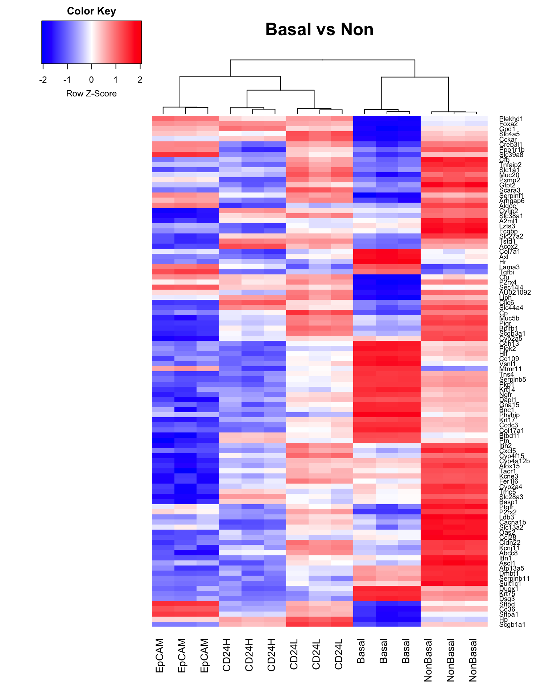

x <- readDGE(files,columns = c(1,3))
#colnames(x)
samplenames <- substring(colnames(x),12, nchar(colnames(x)))
colnames(x) <- samplenames
group <- as.factor(c("Basal","Basal","Basal","NonBasal","NonBasal","NonBasal"
,"CD24H","CD24H","CD24H","CD24L","CD24L","CD24L",
"EpCAM","EpCAM","EpCAM"))
x$samples$group <- group
x$samples## files group lib.size norm.factors
## Ngfr-P-1 GSM2224933_Ngfr-P-1.txt Basal 29317215 1
## Ngfr-P-2 GSM2224934_Ngfr-P-2.txt Basal 31028030 1
## Ngfr-P-3 GSM2224935_Ngfr-P-3.txt Basal 30083570 1
## Ngfr-N-1 GSM2224936_Ngfr-N-1.txt NonBasal 31867557 1
## Ngfr-N-2 GSM2224937_Ngfr-N-2.txt NonBasal 30474913 1
## Ngfr-N-3 GSM2224938_Ngfr-N-3.txt NonBasal 32993621 1
## CD24-H-4 GSM2224939_CD24-H-4.txt CD24H 12070383 1
## CD24-H-5 GSM2224940_CD24-H-5.txt CD24H 12052523 1
## CD24-H-6 GSM2224941_CD24-H-6.txt CD24H 11382205 1
## CD24-L-4 GSM2224942_CD24-L-4.txt CD24L 11165522 1
## CD24-L-5 GSM2224943_CD24-L-5.txt CD24L 11693754 1
## CD24-L-6 GSM2224944_CD24-L-6.txt CD24L 9811503 1
## EpCAM-P-4 GSM2224948_EpCAM-P-4.txt EpCAM 12626769 1
## EpCAM-P-5 GSM2224949_EpCAM-P-5.txt EpCAM 12140267 1
## EpCAM-P-6 GSM2224950_EpCAM-P-6.txt EpCAM 11241139 1##Mus.musculus
geneid <- rownames(x)
genes <- select(Mus.musculus, keys = geneid, columns = c("SYMBOL", "TXCHROM","TXSTART","TXEND","GENENAME"), keytype = "ENTREZID")## 'select()' returned 1:many mapping between keys and columnsgenes <- genes[!duplicated(genes$ENTREZID),]
x$genes <- genes
cpm <- cpm(x)
lcpm <- cpm(x,log=TRUE)
table(rowSums(x$counts==0)==15)##
## FALSE TRUE
## 21636 5543keep.exprs <- rowSums(cpm>1)>=3
x <- x[keep.exprs,, keep.lib.sizes=FALSE]
dim(x)## [1] 15170 15x <- calcNormFactors(x, method = "TMM")
x$samples$norm.factors## [1] 1.1832949 1.1675616 1.1849747 0.9107611 0.9210639 0.9233427 1.1633754
## [8] 1.1528227 1.1386561 0.9718169 0.8578525 0.8624459 0.9096186 0.8910757
## [15] 0.8861008library(RColorBrewer)
par(mfrow=c(1,1))
col.group <- group
levels(col.group) <- brewer.pal(nlevels(col.group),"Set1") #change groupID to colorID
col.group <- as.character(col.group)
plotMDS(lcpm, labels=group, main="MDS: Sample Groups", col=col.group)design <- model.matrix(~0+group)
colnames(design) <- gsub("group", "", colnames(design))
contr.matrix <- makeContrasts(
BasalvsNon = Basal-NonBasal,
BasalvsAirway = Basal-(CD24H+CD24L)/2,
BasalvsEpCAM = Basal-EpCAM,
levels = colnames(design)
)
contr.matrix## Contrasts
## Levels BasalvsNon BasalvsAirway BasalvsEpCAM
## Basal 1 1.0 1
## CD24H 0 -0.5 0
## CD24L 0 -0.5 0
## EpCAM 0 0.0 -1
## NonBasal -1 0.0 0v <- voom(x,design,plot = TRUE)vfit <- lmFit(v,design)
vfit <- contrasts.fit(vfit, contrasts = contr.matrix)
efit <- eBayes(vfit)
summary(decideTests(efit))## BasalvsNon BasalvsAirway BasalvsEpCAM
## Down 4463 5971 5605
## NotSig 6798 3443 4396
## Up 3909 5756 5169tfit <- treat(vfit, lfc=1)
dt <- decideTests(tfit)
summary(dt)## BasalvsNon BasalvsAirway BasalvsEpCAM
## Down 1270 2816 2259
## NotSig 13285 10824 11151
## Up 615 1530 1760##common genes
de.common <- which(dt[,1]!=0 & dt[,2]!=0& dt[,3]!=0)
head(tfit$genes$SYMBOL[de.common], n=20)## [1] "Xkr4" "Rp1" "St18" "Sulf1" "Msc" "Kcnq5" "Dst"
## [8] "Il1r2" "Il18rap" "Col3a1" "Mreg" "Rufy4" "Wnt6" "Wnt10a"
## [15] "Resp18" "Efhd1" "Ackr3" "Ramp1" "Panct2" "Rnf152"vennDiagram(dt[,1:3],circle.col = brewer.pal(3,"Set1"))write.fit(tfit, dt, file="results2.txt")Link to results for four comparisons
BasalvsNon <- topTreat(tfit, coef=1,n=Inf)
BasalvsAirway <- topTreat(tfit, coef=2,n=Inf)
BasalvsEpCAM <- topTreat(tfit, coef=3,n=Inf)write.table(BasalvsNon, file = "./DEgenes_RankedResult2/Basal_vs_Non_RankedResults.txt",sep = "\t",row.names = F)
write.table(BasalvsAirway, file = "./DEgenes_RankedResult2/Basal_vs_Airway_RankedResults.txt",sep = "\t",row.names = F)
write.table(BasalvsEpCAM, file = "./DEgenes_RankedResult2/Basal_vs_EpCAM_RankedResults.txt",sep = "\t",row.names = F)Click here to download DEgenes lists ranked by adj.p.val
glMDPlot(tfit, coef=1, status = dt[,1], main = colnames(tfit)[1], counts = x$counts,
samples=colnames(x), anno = x$genes, groups = group, side.main ="ENTREZID",
display.columns = c("SYMBOL","ENTREZID"), search.by="SYMBOL", launch = F,
html = "MDplot_Basal_vs_Non")
glMDPlot(tfit, coef=2, status = dt[,2], main = colnames(tfit)[2], counts = x$counts,
samples=colnames(x), anno = x$genes, groups = group, side.main ="ENTREZID",
display.columns = c("SYMBOL","ENTREZID"), search.by="SYMBOL", launch = F,
html = "MDplot_Basal_vs_Airway")
glMDPlot(tfit, coef=3, status = dt[,3], main = colnames(tfit)[3], counts = x$counts,
samples=colnames(x), anno = x$genes, groups = group, side.main ="ENTREZID",
display.columns = c("SYMBOL","ENTREZID"), search.by="SYMBOL", launch = F,
html = "MDplot_Basal_vs_EpCAM")Link to Interactive MDPlot for Basal_vs_Non
Link to Interactive MDPlot for Basal_vs_Airway
Link to Interactive MDPlot for Basal_vs_EpCAM
BasalvsNon.topgenes <- BasalvsNon$ENTREZID[1:100]
i <- which(v$genes$ENTREZID %in% BasalvsNon.topgenes)
mycol <- colorpanel(1000, "blue","white","red")
heatmap.2(v$E[i,],scale = "row", labRow = v$genes$SYMBOL[i], labCol = group,
col=mycol, trace = "none", density.info = "none", margins = c(6,6),
lhei = c(2,10), dendrogram = "column", main = "Basal vs Non")
BasalvsAirway.topgenes <- BasalvsAirway$ENTREZID[1:100]
i <- which(v$genes$ENTREZID %in% BasalvsAirway.topgenes)
mycol <- colorpanel(1000, "blue","white","red")
heatmap.2(v$E[i,],scale = "row", labRow = v$genes$SYMBOL[i], labCol = group,
col=mycol, trace = "none", density.info = "none", margins = c(8,6),
lhei = c(2,10), dendrogram = "column",main = "Basal vs Airway")BasalvsEpCAM.topgenes <- BasalvsEpCAM$ENTREZID[1:100]
i <- which(v$genes$ENTREZID %in% BasalvsEpCAM.topgenes)
mycol <- colorpanel(1000, "blue","white","red")
heatmap.2(v$E[i,],scale = "row", labRow = v$genes$SYMBOL[i], labCol = group,
col=mycol, trace = "none", density.info = "none",margins = c(8,6),
lhei = c(2,10), dendrogram = "column",main = "Basal vs EpCAM")#Gene set testing
library(EGSEAdata)
#egsea.data("mouse") #show details
info = egsea.data("mouse", returnInfo = TRUE)
#names(info) #show database
#info$msigdb$info$collections #show gene set
library(EGSEA)
gs.annots <- buildIdx(entrezIDs = v$genes$ENTREZID, species = "mouse",
msigdb.gsets = c("h","c2","c5","c7"), go.part = TRUE)
##set parameters
colnames(v$genes)
symbolsMap <- v$genes[,c(1,3)]
colnames(symbolsMap) <- c("FeatureID", "Symbols")
symbolsMap[,"Symbols"] <- as.character(symbolsMap[,"Symbols"])
egsea.base() #show GSE methods
baseMethods <- egsea.base()[-2]
##ensemble testing
gsa <- egsea(voom.results = v, contrasts = contr.matrix, gs.annots = gs.annots,
symbolsMap = symbolsMap, baseGSEAs = baseMethods, sort.by = "med.rank",
num.threads = 8, report = FALSE)
summary(gsa) #top 10 sets for each collection
save(gsa, file = "gsa2.rda")load("gsa2.rda")
#topSets
contr <- colnames(dt)
gset <- c("h","c2","c5BP","c5CC","c5MF","c7","kegg")
setwd("./Ranked_GeneSets2")
for (i in 1:length(contr)) {
for (j in i:length(gset)) {
top <- topSets(gsa, contrast = contr[i], gs.label = gset[j], names.only = FALSE, number = Inf, verbose = FALSE)
write.table(top,paste(contr[i],gset[j],"topSets.txt",sep = "_"), sep = "\t", col.names = NA)
}
}